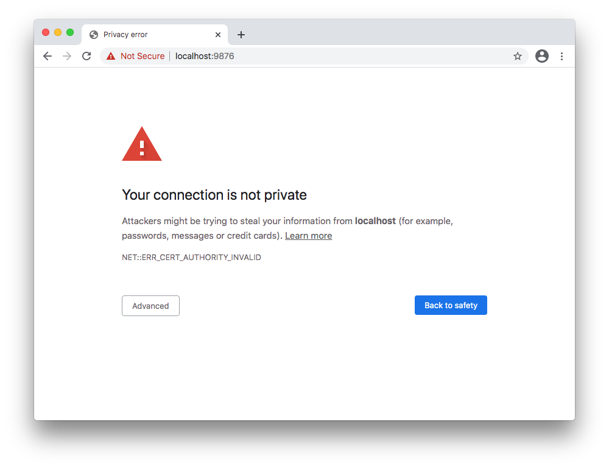
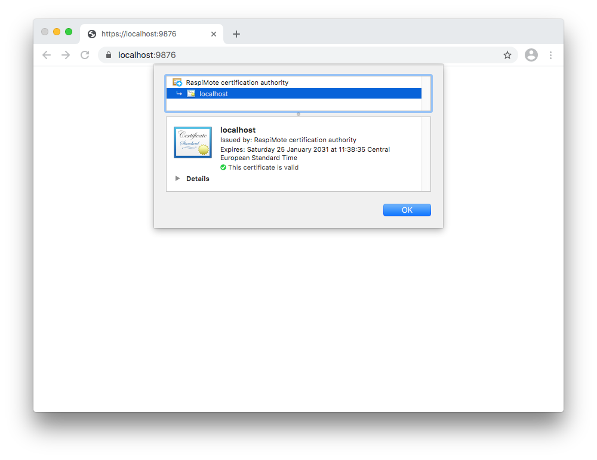
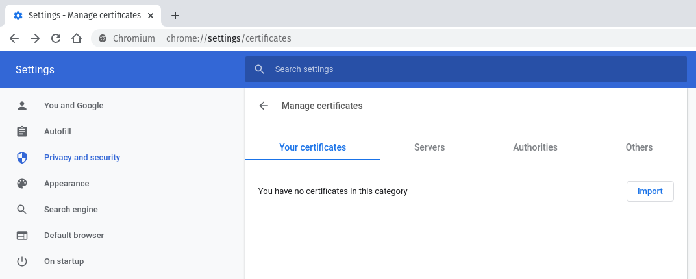
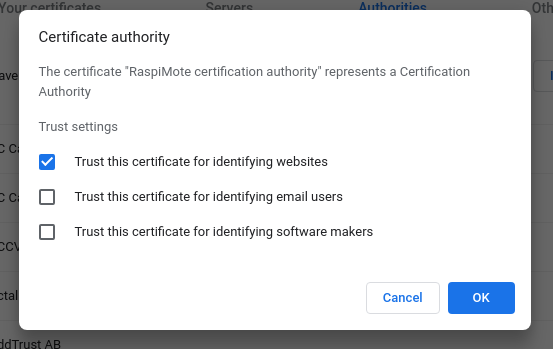
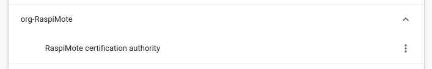
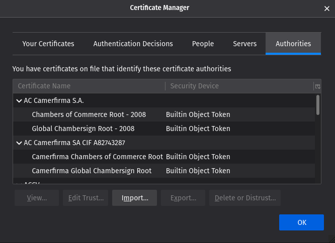
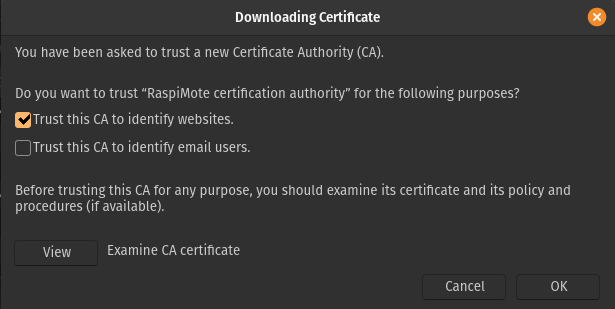
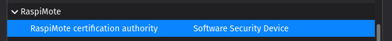
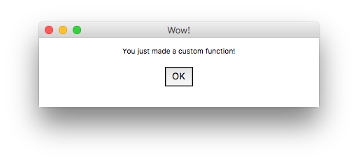

Description
You want to turn your Raspberry Pi into a programmable keyboard / controller / remote control? RaspiMote is what you need!
In this documentation, you will learn to install RaspiMote on your Raspberry Pi (we recommend using a Raspberry Pi Zero W / WH) and the driver to configure and use it
Getting started
To install RaspiMote on your PC, transfer the pi folder to your Raspberry Pi and the driver folder to your computer, then you can run the provided scripts:
win_install.cmdfor Windows;deb_install.shfor Debian-based Linux distributions (and then follow the part Debian post-install);
Debian post-install
On Debian-based systems, you should additionnaly add our certification authority to your trusted certification authorities on your web browser (it's automatically done by the installation script on Windows).
This will allow you to use our web-based configuration UI. Else, it won't be able to send any requests to the driver server.
Not adding our certification authority means that the browser will encounter the following error each time you are trying to modify something. But this error message wouldn't even be prompted to you, as it happens in the background of the UI. It would simply fail!
However, if you add our certification authority, the browser will “trust” our driver, just like in the following example:
Chrome / Chromium / Brave
On Chrome / Chromium / Brave, navigate to chrome://settings/certificates. The following page should display:
Once you are there, click on “Authorities” and then on “Import”. On your home folder (~ / /home/username), you should find the file raspimote_ca.pem (only if you have already executed the installation script!). Select this file.
This window should display:
Simply tick the checkbox “Trust this certificate for identifying websites” and click “OK”.
Our certification authority (“RaspiMote certification authority”) should appear in the list, under “org-RaspiMote”, as shown below.
Firefox
On Firefox, navigate to about:preferences#privacy. In the part called “Certificates”, click on “View Certificates...”
This window should display:
Make sure you are on the tab “Authorities” (it should be the one displayed by default) and click on “Import”. On your home folder (~ / /home/username), you should find the file raspimote_ca.pem (only if you have already executed the installation script!). Select this file.
This window should display:
Simply tick the checkbox “Trust this CA to identify websites” and click “OK”.
Our certification authority (“RaspiMote certification authority”) should appear in the list, under “RaspiMote”, as shown below.
Basic setup
The main purpose of RaspiMote is to allow you to create your own functions that will fit your needs (for provided functions, see Built-in functions).
The process is divided in two parts:
- writing Pi's code to add your inputs;
- writing driver's code to connect those inputs to functions.
Pi
You will need to customise your RaspiMote Pi script to add your physical inputs.
The Pi class comes with some premade input methods (check methods' docstring to see the parameters) :
- buttons;
- USB HID devices (keyboards, mice);
- Analog Digital Converters (ADC).
When creating the Pi object, you can add a configuration dictionary, see the following example:
pi = Pi([
{"pin": "21", "type_input": "button"},
{"pin": "20", "type_input": "button"},
{"pin": "16", "type_input": "button"},
{"pin": "6", "type_input": "button"},
{"pin": "13", "type_input": "button"},
{"pin": "19", "type_input": "button"},
{"pin": "26", "type_input": "button"},
])
This only works for buttons for the moment.
If you want to add USB and ADC devices, use the dedicated methods with this code (this is only an example):
pi.add_ADC_Device_PCF8591(2)
pi.add_USB_Device(1)
pi.add_USB_Device(4)
Driver
After having added your inputs to the Raspberry Pi, you need to decide what they will do on your PC. You must customise ./driver/lan_server/command_processor.py, in parse_data() function, you can write your code. See Built-in functions section to see what features are available or write your own ones.
Example of a USB keyboard that writes mathematical symbols:
key_to_char = {
"KEY_Q" : "α" ,
"KEY_W" : "β" ,
"KEY_E" : "π" ,
"KEY_R" : "ω" ,
"KEY_T" : "Δ" ,
"KEY_Y" : "≈" ,
"KEY_U" : "√" ,
"KEY_I" : "∞" ,
"KEY_O" : "≠" ,
}
if type_device == "USB" and pin == 4 and int (extra) == 1 :
if value in key_to_char:
type_text(key_to_char[value])
Built-in functions
With these functions, you can already perform multiple actions but don't forget to check the function's docstring :
- simulate keystroke and key combinaison (any character and function key);
- change sound level;
- etc...
Running
Pi
Before the system runs, you need to execute pi.establish_connection(server_IP) to initiate connection.
Driver
After the Pi executed pi.establish_connection(server_IP), you can start the driver and after it executed driver.run(), it should process your Pi's requests.
Creating custom functions
You can create your own custom functions modifying the file custom_actions.py in /usr/bin/RaspiMote/driver/driver/lan_server/custom_fcn (Linux) or C:\Program Files\RaspiMote\driver\driver\lan_server\custom_fcn (Windows).
For example, this function will open an alert box when triggered:
import pyautogui # This line imports the "pyautogui" module, useful to open dialogboxes.
def alert ():
pyautogui.alert("You just made a custom function!" , "Wow!" ) # This line opens an alert box.
Once the above function is linked to a button, pressing the button will open this alert box:
This is, of course, a very simple (and boring) example. Much complex and interesting things can be made; your imagination is the only limit!
If the function is dedicated to a GPIO button, no argument is passed. However, if the function is dedicated to an ADC device (potentiometer, joystick), the position of the knob / axis, in percents, is the only argument passed. You can add extra arguments to the function, after the required one(s), if there is any.
To associate the function with a button, simply use the web-based configuration UI.
For example, the following configuration, once saved, will associate the button plugged on GPIO 13 with the function alert():